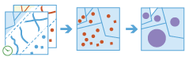
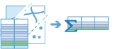
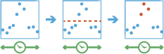
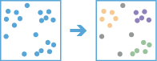
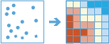
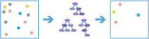
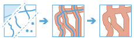
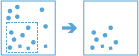
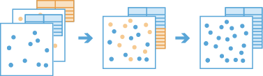
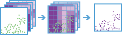

GeoAnalytics מפזר את העבודה הניתוחית על פני ArcGIS GeoAnalytics Server. הדבר מאפשר לך לנתח יותר נתונים מהר יותר עם מספר מחשבים. הכלים הבאים זמינים:
- קיבוץ נקודות
- בנה גריד מרובה משתנים
- תיאור סט נתונים
- צרף ישויות
- בניית מסלולים מחדש
- סכם מאפיינים
- סיכום בתוך
- עיגון כתובות מיקומים מטבלה
- העשר מגריד מרובה-משתנים
- זיהוי תקריות
- איתור מיקומים דומים
- חשב צפיפות
- מצא אשכולות של נקודות
- מציאת נקודות חמות
- סיווג ורגרסיה על בסיס יער
- רגרסיה ליניארית מוכללת
- יצירת אזורי חיץ
- הוסף נתונים
- חשב שדה
- העתק למאגר נתונים
- כיסוי שכבות
- מיזוג גבולות
- מיזוג שכבות
- חתוך שכבה
GeoAnalytics מתמקד בניתוח כמויות נתונים גדולות עם דגש הן על דפוסי מרחב והן על דפוסי זמן.
Summarize Data
The Summarize Data toolset contains tools that calculate total counts, lengths, areas, and basic descriptive statistics of features and their attributes within areas or near other features.
- Aggregate Points calculates statistics about points that fall within specified areas or bins.
- Build Multi-Variable Grid generates a grid of square or hexagonal bins and calculates values for each bin based on the proximity of each input layer.
- Describe Dataset calculates a summary of your input, and can optionally generate a sample of your input layer.
- Join Features calculates statistics about features that share a spatial, temporal, or attribute relationship with other features.
- Reconstruct Tracks calculates statistics about points or polygons that belong to the same track and reconstructs inputs into tracks.
- Summarize Attributes calculates statistics about feature or tabular data that share attributes.
- Summarize Within calculates statistics for area features and attributes that overlap each other.
קיבוץ נקודות |

|
כלי זה משתמש בשכבה של ישויות נקודה ובשכבה של ישויות אזור או בתאים שמוגדרים על ידי מרחק שצוין, כדי לקבוע אילו נקודות נמצאות בתוך כל אזור או תא ומחשב נתונים סטטיסטיים אודות כל הנקודות בתוך כל אזור או תא. ניתן לבחור להשתמש בקיטוע זמן ביחד עם כלי זה.
להלן מספר דוגמאות:
- בהינתן מיקומי נקודה של אירועי פשיעה, ספור את מספר הפשעים בכל מחוז או יחידה מנהלית אחרת.
- מצא את הרווחים החודשיים הגבוהים ביותר והנמוכים ביותר עבור מיקומי חנויות תוך שימוש ב תאים של 100-קילומטר.
בנה גריד מרובה משתנים |

|
הכלי 'בנה גריד מרובה משתנים' מפיק גריד של תאים מרובעים או משושים ומחשב משתנים עבור כל תא על בסיס הקרבה של שכבת קלט אחת או יותר.
להלן מספר דוגמאות:
- בהינתן שכבות מרובות של תשתית תחבורה ציבורית, איזה חלק של העיר הוא הכי פחות נגיד בתחבורה ציבורית?
- בהינתן שכבות של נתיבי מים, כגון אגמים ונהרות, מהו שם מקור המים הקרוב ביותר לכל מיקום בארה"ב?
- בהינתן שכבה של הכנסות לבית אב, היכן בארה"ב שונות ההכנסה ברדיוס של 80 ק"מ היא הגדולה ביותר?
תיאור סט הנתונים |

|
סכם ישויות קלט עם נתונים סטטיסטיים, שכבות לדוגמה והצגה חזותית. באפשרותך לבחור לקבל פלט של שכבת דגימה או של שכבת תיחום.
להלן מספר דוגמאות:
- עיין בנתונים הסטטיסטיים המסוכמים כדי להבין אילו ערכים סט הנתונים שלך מכיל.
- במקום לשרטט את סט הנתונים כולו, צור שכבת סט משנה כדי להציג חזותית ישויות ואת המאפיינים שלהן בעת הוספת מפה.
- חסוך זמן ומשאבים והרץ ניתוח על שכבת דגימה לפני הרצת ניתוח על סט הנתונים כולו.
צרף ישויות |
 |
תוך שימוש בשכבות אזור או בנתונים טבלאיים, באפשרותך לצרף ישויות ורשומות על בסיס קשר ספציפי בין שכבות הקלט או הטבלאות. הצירוף ייקבע על ידי קשרים מרחביים, זמניים ושל מאפיינים, וניתן לחשב סיכומים סטטיסטיים לפי בחירה.
להלן מספר דוגמאות:
- בהינתן מיקומי נקודות של אירועי פשיעה עם שעה, צרף את נתוני הפשיעה לעצמם תוך ציון קשר מרחבי של פשעים בטווח של ק"מ 1 זה מזה, ואשר התרחשו בטווח של שעה 1 זה מזה, כדי לקבוע אם יש רצף של פשעים קרובים זה לזה במרחב ובזמן.
- בהינתן טבלה של קודי מיקוד עם מידע דמוגרפי ומאפייני אזור שמייצגים בנייני מגורים, צרף את המידע הדמוגרפי לבנייני המגורים, כך שלכל בניין יש כעת את המידע.
בניית מסלולים מחדש |

|
תוך שימוש בישויות שכבת נקודה או פוליגון עם רכיב זמן מופעל שמייצג רגע בזמן, כלי זה קובע אילו ישויות קלט שייכות למסלול ויסדר את הקלטים ברצף בזמן. כאופציה, מחושבים נתונים סטטיסטיים עבור ישויות הקלט בתוך כל מסלול.
להלן מספר דוגמאות:
- בהינתן מיקומי נקודה ושעה של מדידות הוריקן, חישוב מהירות הרוח הממוצעת ולחץ הרוח המקסימלי של ההוריקן.
- מדידות ה-GPS של ספינות כדי לבנות מחדש נתיבי ספינות כקווים.
סכם מאפיינים |
 |
תוך שימוש בישות או בנתונים טבלאיים, כלי זה מסכם נתונים סטטיסטיים עבור שדות שצוינו.
להלן מספר דוגמאות:
- בהינתן מיקומים של מרכולים עם שדה COMPANY_NAME, סכם את המרכולים לפי שם חברה כדי לקבוע נתונים סטטיסטיים עבור כל חברה.
- בהינתן טבלה של מרכולים עם שדות COMPANY_NAME ו- COUNTY, סכם את המרכולים לפי שם חברה ומחוז, כדי לקבוע נתונים סטטיסטיים עבור כל חברה בכל מחוז.
סיכום בתוך |

|
מציאת אזורים (וחלקי אזורים) שחופפים בין שתי שכבות וחישוב נתונים סטטיסטיים אודות החפיפה.
להלן מספר דוגמאות:
- בהינתן שכבה של אזורי שטח קו פרשת מים ושכבה של גבולות שימוש בקרקע לפי סוג שימוש בקרקע, חשב את השטח הכולל של סוג שימוש בקרקע עבור כל שטח קו פרשת מים.
- בהינתן שכבה של חלקות במחוז ושכבה של גבולות עיר, סכם את הערך הממוצע של חלקות פנויות בתוך כל עיר.
איתור מיקומים
כלים אלה משמשים לזיהוי אזורים שמקיימים מספר קריטריונים שונים שציינת.
- זיהוי תקריות עובד עם שכבות שבהן רכיב זמן פעיל כדי לקבוע אילו ישויות מקיימות תנאי שצוין.
- עיגון כתובות מיקומים מטבלה ממיר כתובות לקואורדינטות.
- איתור מיקומים דומים מוצא את המיקומים הדומים ביותר לאחד או יותר ממיקומי הייחוס בהתבסס על קריטריונים שציינת.
זיהוי תקריות |
 |
כלי זה עובד עם שכבת נקודות, קווים, אזורים או טבלאות עם רכיב זמן מופעל אשר מייצגות רגע בזמן. תוך שימוש בישויות המסודרות ברצף, שנקראות מסלולים, כלי זה קובע אילו ישויות הן תקריות שיש בהן עניין. תקריות נקבעות על ידי תנאים שאתה מציין.
להלן מספר דוגמאות:
- זהה מדידות הוריקן שהן הוריקני בקטגוריה 4, על בסיס מאפיין מהירות הרוח.
- בעזרת מדידות GPS של תנועת ספינה עם שדה שמייצג את מהירות הספינה, מצא מדידות שהן גדולות יותר מפי 1.5 הממוצע של חמש המדידות הקודמות.
עיגון כתובות מיקומים מטבלה |

|
ממיר כתובות לקואורדינטות. השתמש בכל זה על טבלאות שיתוף קובץ Big Data.
איתור מיקומים דומים |

|
על בסיס קריטריונים שאתה מציין, מצא מיקומים דומים על ידי מדידת הדמיון של מיקומים בשכבת חיפוש המועמדים שלך למיקום ייחוס אחד או יותר.
להלן מספר דוגמאות:
- מצא את עשר החנויות הדומות ביותר על ידי בדיקת מספר העובדים והמכירות השנתיות.
- מצא את 100 הערים הדומות ביותר על ידי בדיקת היחסים בין אוכלוסייה, צמיחה שנתית והכנסות ממסים.
ניתוח דפוסים
כלים אלה עוזרים לזהות, לכמת ולהציג דפוסים מרחביים בנתונים.
- חישוב צפיפות לוקח כמויות ידועות של תופעה מסוימת ומפזר כמויות אלה על פני המפה.
- מציאת נקודות חמות מזהה קיבוץ באשכולות מובהק סטטיסטית בדפוס המרחבי של הנתונים.
- מצא אשכולות של נקודות מוצא אשכולות של ישויות נקודה בתוך רעש סובב בהתבסס על הפיזור המרחבי שלהן.
- סיווג ורגרסיה על בסיס יער יוצר מודלים ומפיק תחזיות תוך שימוש בהתאמה של אלגוריתם היער האקראי של Leo Breiman, שזו שיטת למידת מכונה מפוקחת.
- רגרסיה לינארית מוכללת מפיק חיזויים או ממדל משתנה תלוי מבחינת היחסים שלו לערכה של משתנים מסבירים.
חשב צפיפות |

|
הכלי 'חשב צפיפות' יוצר מפת צפיפות מישויות נקודה, על ידי פיזור כמויות ידועות של תופעה מסוימת (שמיוצגת כמאפיינים של הנקודות) על פני המפה. התוצאה היא שכבה של אזורים שמייצגים את הצפיפות.
להלן מספר דוגמאות:
- חישוב צפיפויות של בתי חולים בתוך ארץ מסוימת. שכבת התוצאה תציג אזורים עם נגישות גבוהה ונמוכה לבתי חולים, וניתן להשתמש במידע זה כדי להחלט היכן יש לבנות בתי חולים חדשים.
- זיהוי אזורים שבהם יש סיכון גבוה לשרפות יער, על סמך מיקומים היסטוריים של שרפות יער.
- איתור קהילות שהן רחוקות מכבישים ראשיים, כדי לתכנן היכן יש לסלול כבישים חדשים.
מצא אשכולות של נקודות |
 |
הכלי 'מצא אשכולות של נקודות' מוצא אשכולות של ישויות נקודה בתוך רעש סובב בהתבסס על הפיזור המרחבי שלהן.
להלן מספר דוגמאות:
- מצא אשכולות של בתי אב מזוהמים במזיקים כדי לעזור במאמצי ההדברה.
- קבל מידע ופעל למתן מענה לצורכי הצלה ופינוי על בסיס הגודל והמיקום של האשכולות בעזרת ציוצים לפי מיקום בעקבות סכנות טבע או מתקפות טרור.
מציאת נקודות חמות |
 |
הכלי 'מציאת נקודות חמות' יקבע אם קיימים אשכולות בעלי מובהקות סטטיסטית בדפוס המרחבי של הנתונים.
- האם הנקודות שלך (אירועי פשיעה, עצים, תאונות דרכים) באמת מקובצים באשכולות? איך תוכל לדעת בוודאות?
- האם באמת מצאת נקודה חמה מובהקת סטטיסטית (להוצאות, תמותת תינוקות, תוצאות בדיקות גבוהות בעקביות) או שהמפה שלך תספר סיפור אחר אם תשנה את הדרך שבה היא מסומלת?
סיווג ורגרסיה על בסיס יער |
 |
הכלי 'סיווג ורגרסיה על בסיס יער' יוצר מודלים ומפיק תחזיות תוך שימוש בהתאמה של אלגוריתם היער האקראי של Leo Breiman, שזו שיטת למידת מכונה מפוקחת
להלן מספר דוגמאות:
- בהינתן נתונים על הופעות של עשב ים, וכן מספר משתנים סביבתיים מסבירים שמיוצגים כשני המאפיינים שהועשרו באמצעות גריד מרובה-משתנים לחישוב מרחקים למפעלים במעלה הזרם ונמלים גדולם, ניתן לחזות הופעות עתידיות של עשב ים על בסיס הטלות לעתיד עבור אותם משתנים מסבירים סביבתיים.
- נניח שברשותך נתוני תפוקת יבול במאות משקים ברחבי המדינה, ביחד עם מאפיינים אחרים בכל אחד מהמשקים הללו (מספר עובדים, שטח וכד'). תוך שימוש בפריטי נתונים אלה, באפשרותך לספק מערך ישויות שמייצגות משקים שבהם אין לך תפוקת יבול (אבל בידיך כל המשתנים האחרים), ולבצע חיזוי אודות תפוקת היבול.
- ניתן לחזות ערכי דיור על בסיס המחירים של בתים שנמכרו בשנה הנוכחית. ניתן להשתמש במחירי המכירה של בתים שנמכרו ביחד עם מידע אודות מספר החדרים, מרחק מבתי ספר, קרבה לכבישים ראשיים, הכנסה ממוצעת ומספר מקרי פשע כדי לחזות את מחירי המכירה של בתים דומים.
רגרסיה ליניארית מוכללת |

|
הכלי 'רגרסיה לינארית מוכללת' מפיק חיזויים או ממדל משתנה תלוי מבחינת היחסים שלו לערכה של משתנים מסבירים. ניתן להשתמש בכלי זה כדי להתאים מודלים רציפים (OLS), בינאריים (לוגיסטיים) ושל ספירה (Poisson).
להלן מספר דוגמאות:
- אילו מאפיינים דמוגרפיים תורמים לשיעורים גבוהים של שימוש בתחבורה ציבורית?
- הם יש קשר חיובי בין ונדליזם לפריצות?
- אילו משתנים חוזים ביעילות נפח התקשרות למספרי חירום? בהינתן חיזויים עתידיים, מהו הביקוש הצפוי למשאבי מענה במקרה חירום?
- אילו משתנים משפיעים על שיעורי לידות נמוכים?
שימוש בסמיכות
כלים אלה עוזרים לענות על אחת מהשאלות הנפוצות ביותר בניתוח מרחבי: "מה נמצא ליד מה?"
- יצירת אזורי חיץ יוצרת אזורים במרחק שצוין מישויות.
יצירת אזורי חיץ |
 |
חיץ הוא אזור שמכסה מרחק נתון מישות נקודה, קו או פוליגון.
להלן מספר דוגמאות:
- תוך שימוש במאפייני נהר לינארים, צור חיץ לכל נהר לפי 50 פעמים הרוחב של הנהר, כדי לקבוע גבול מוצע לגדות נהר.
- בהינתן אזורים שמייצגים ארצות, צור חיץ לכל ארץ לפי 200 מייל ימי כדי לקבוע את הגבול הימי.
Manage Data
These tools are used for the day-to-day management of geographic and tabular data.
- Append Data appends features to an existing hosted feature layer.
- Calculate Field creates a new field or modifies an existing field and creates a new layer in your contents.
- Clip Layer copies features that intersect a defined area of interest.
- Copy to Data Store copies data to your ArcGIS Data Store and creates a layer in your contents.
- Dissolve Boundaries merges areas that share a common boundary or attribute value.
- Merge Layers copies all features from two layers into a single result layer.
- Overlay Layers combines two or more layers into a single layer.
העתק למאגר נתונים |
 |
מעתיק טבלה או שכבת ישויות של קלט ל- ArcGIS Data Store ויוצר שכבה בתכנים שלך ב-ArcGIS Enterprise.
להלן מספר דוגמאות:
- העתק אוסף של קובצי
.csvבקובץ שיתוף Big Data למאגר הנתונים המרחבי-זמני לצורך הצגה חזותית. - העתק את המשויות בתיחום המפה הנוכחי אשר מאוחסנות במאגר הנתונים המרחבי-זמני למאגר הנתונים היחסים.
חשב שדה |

|
מחשב ערכים עבור שדה חדש או קיים ויוצר שכבה בתכנים שלך ב- ArcGIS Enterprise.
להלן מספר דוגמאות:
- שנה שדה קיים בשם total כך שיהיה סכום הרווח מהשדות total_2016, total_2017 ו- total_2018.
- צור שדה חדש כדי לסווג רמות סכנה על בסיס ערכי שדה כגון windspeed ו- pollutant.
חתוך שכבה |

|
חתוך ישויות קלט מאזורי עניין מוגדרים. תוצאת הפלט תהיה ערכת משנה של ישויות קלט.
להלן מספר דוגמאות:
- יצור ערכת משנה של בניינים בסכנה שנמצאים בתוך אזורי הצפה.
- קבע אילו כבישים ראשיים עוברים באזורי הפיתוח הפוטנציאליים שלך.
מיזוג גבולות |

|
מזג ישויות אזור שמצטלבות או בעלות ערך שדה משותף כדי ליצור ישויות רציפות או מרובותחלקים.
להלן מספר דוגמאות:
- צור ישות אחת שמייצגת את מדינת הוואי על ידי מיזוג הגבולות של איי הוואי.
- שלב אזורי מחקר דומים על בסיס סוג האדמה כדי לקבל פלט של סט נתוני סוג קרקע רציפים.
כיסוי שכבות |

|
משלב שתי שכבות או יותר ליצירת שכבה יחידה אחת. כיסוי משמש לצורך מענה על אחת מהשאלות הבסיסיות ביותר של גאוגרפיה, "מה נמצא מעל מה?".
להלן מספר דוגמאות:
- אילו חלקות נמצאות בתוך מישור ההצפה 100-שנה? ("בתוך" זו פשוט דרך אחרת לומר "מעל".)
- איזה שימוש בקרקע נמצא מעל איזה סוג קרקע?
- אילו בארות נמצאות בתוך בסיסים צבאיים נטושים?
הוסף נתונים |
 |
מוסיף ישויות לשכבה מתארחת קיימת בתכנים שלך ב- ArcGIS Enterprise.
להלן מספר דוגמאות:
- עדכן את שכבת הישויות 2018_Sales בכל חודש כאשר הדוחות מגיעים.
- הוסף סטים של נתוני מסלול הוריקן מהשנים 2016 ו-2017 לסט נתוני הוריקן ראשי.
- אסוף והוסף סטים של נתונים ממקורות שונים עם סכמות שונות באמצעות מיפוי שדה מותאם אישית.
מיזוג שכבות |

|
משלב שתי שכבות ישויות ליצירת שכבת תוצאה אחת. כל השדות משכבת המיזוג ייכללו כברירת מחדל, לחלופין באפשרותך לציין כללי מיזוג מותאמים אישית כדי להגדיר את סכמת התוצאה.
להלן מספר דוגמאות:
- מזג שלוש שכבות שמכילות מידע דמוגרפי מאנגליה, ווילס וסקוטלנד ליצירת שכבה אחת של בריטניה.
- צרף שתי שכבות שמכילות פרטי חלקות עבור אזורים מוניציפליים רציפים, תוך שמירה רק של השדות שיש להם אותו שם ואותו סוג בשתי השכבות.
העשרת מידע
כלים אלה עוזרים לגלות את האופי של אזורים.
- העשר מגריד מרובה-ערכים מצרף מאפיינים משכבת גריד מרובה-משתנים לשכבת נקודה.
העשר מגריד מרובה-משתנים |
 |
מצרף ביעילות מאפיינים מגריד מרובה-משתנים לשכבת נקודות כדי לאפשר לך להוסיף במהירות אוסף מידע גדול ומקוון לנתוני נקודה לשימוש בניתוח מרחבי נוסף.
להלן מספר דוגמאות:
- בהינתן שכבה שמכילה מיליוני תקריות הפסקת חשמל, העשר את ישויות התקריות במידע אודות שימוש טיפוסי, סיכונים סביבתיים ותנאי תשתית, כדי לחקור את הקשר בין גורמים אלה לבין התדירות של הפסקות חשמל.